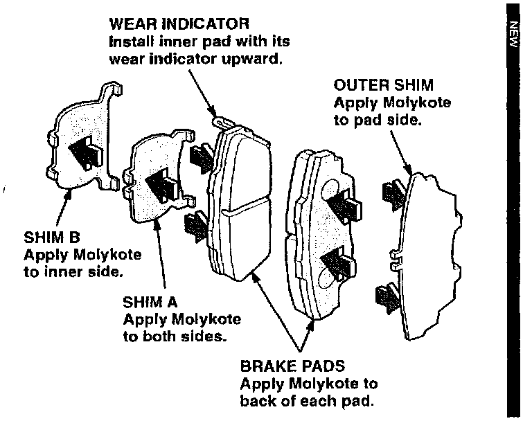
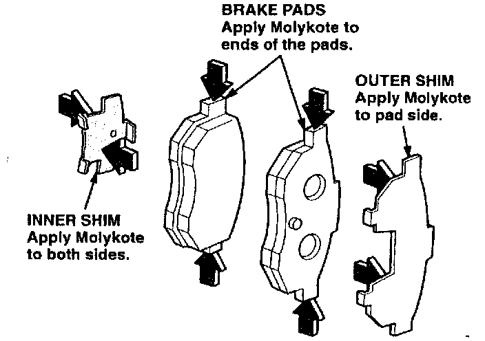
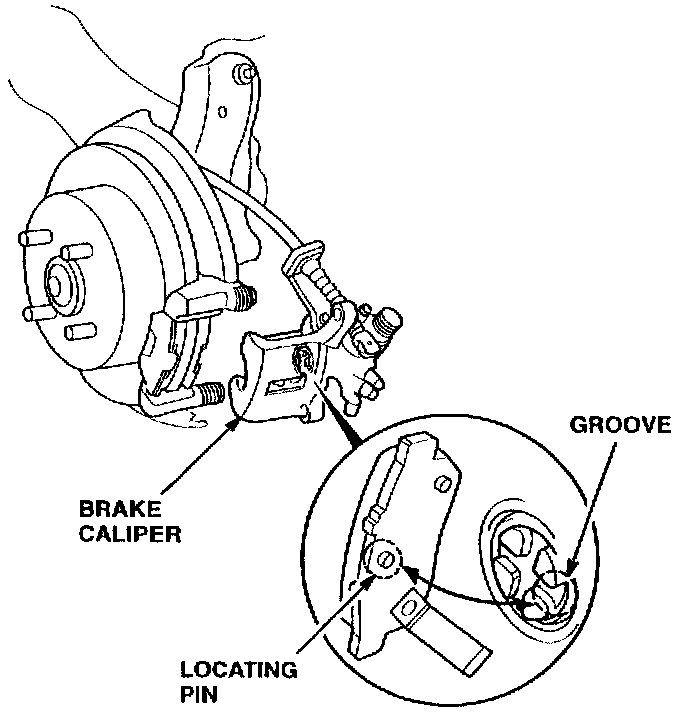

Brakes - Squeaking Noise From Front Or Rear
September 17, 1996BULLETIN NO.
96-001
YEAR
1994-96
MODEL
INTEGRA
VIN APPLICATION
ALL
Squeaking Noise From Front or Rear Disc Brakes
(Supersedes 96-001, Squeaking Noise From Rear Disc Brakes, dated January 16, 1996)
PROBLEM
A squeaking noise from the front or rear when you lightly apply the brakes. [NEW]
PARTS INFORMATION
Front Brake Pad Shim Set: [NEW]
P/N 45011-ST7-305 [NEW]
Rear Inner Brake Pad Shim (2 required):
P/N 43225-SF1-003
REQUIRED MATERIALS
Molykote M77 Grease: P/N 08798-9010
WARRANTY CLAIM INFORMATION
In warranty:
The normal warranty applies.
Install Front Brake Pad Shims: [NEW]
Operation number: 410102 [NEW]
Flat rate time: 1.0 hour [NEW]
Failed P/N: 45022-ST7-000 [NEW]
Defect code: 042 [NEW]
Contention code: B07 [NEW]
Template ID: 96-001B [NEW]
Install Rear Brake Pad Shims:
Operation number: 411110
Flat rate time: 1.0 hour
Failed P/N: 43022-ST7-000
Defect code: 042
Contention code: B07
Template ID: 96-001A
Out of warranty:
Any repair performed after warranty expiration may be eligible for goodwill consideration by the District Technical Manager or your Zone Office. You must request consideration, and get a decision, before starting work.
CORRECTIVE ACTION
Depending on where the noise is coming from, install the front or rear brake pad shims listed under PARTS INFORMATION. Refer to section 19 of the Service Manual for brake pad removal and installation.
Front Brake Shims:

Apply Molykote M77 grease to the back of each brake pad, to the pad side of the outer shims, to both sides of the A shims, and to the inner sides of the B shims (see PARTS INFORMATION and REQUIRED MATERIALS).
NOTE:
When you install each pair of front pads, make sure you put the pad with the wear indicator on the inside.
Rear Brake Shims:

Apply Molykote M77 grease to both sides of the new inner shims, to the pad side of the outer shims, and to the ends of the pads (see PARTS INFORMATION and REQUIRED MATERIALS).

NOTE:
When you install the rear inner brake pads, make sure you put the pad with the wear indicator on the inside. Also make sure that the locating pin on the pad is in one of the grooves in the piston.